Những khái niệm cần biết và setup cơ bản
1. Những khái niệm cần biết
1. Hệ tọa độ Descartes
Không cần vòng vo gì nhiều, hệ tọa độ này chính là cái mà bạn đã học trong suốt 12 năm học, còn nếu bạn muốn tìm hiểu thêm thì mình đã có link tới Wikipedia ở trên. Tuy nhiên, có một điểm mà bạn cần lưu ý là, đối với Game và đa số các phần mềm đồ họa 3D, thì trục hướng lên là trục \(y\) chứ không phải trục \(z\) như trong toán học, và có chia ra làm 2 loại hệ tọa độ: Tay trái và tay phải, mình thì quen hệ tọa độ tay trái hơn, lúc đó trục z sẽ hướng ra xa mình, trục x sẽ hướng sang phải, và trục y sẽ hướng lên trên, và mình sẽ dùng hệ tọa độ tay trái trong suốt quá trình giải thích engine của mình. Nguồn ảnh: learnopengles
Nguồn ảnh: learnopengles
 Nguồn ảnh: vietjack, SGK Toán lớp 12
Nguồn ảnh: vietjack, SGK Toán lớp 12
2. Nội suy tuyến tính (linear interpolation)
Khái niệm này theo mình nhớ thì chưa từng giới thiệu chính thức qua ở 12 năm học, nhưng chắc chắn là bạn đã áp dụng qua nó nhiều lần rồi. Nó đơn giản chỉ là tìm một giá trị \(M\) giữa 2 giá trị \(A, B\) dựa vào giá trị \(t\), \(t\) là giá trị "phần trăm quãng đường từ \(A\) tới \(B\)". Nghĩa là khi \(t = 0\) thì \(M = A\) và \(t = 1\) thì \(M = B\), \(t=0.5\) thì nó ngay giữa \(A, B\). Công thức của nội suy tuyến tính khá đơn giản: \(M = A + (B - A) * t\), bạn có thể xem hình dưới đây và tự ngẫm: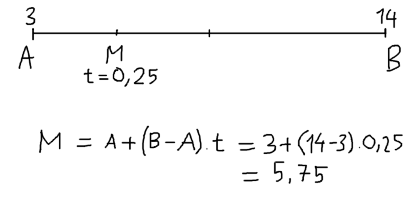
3. Bản chất sin và cos
Ở cấp 2, 3, chưa từng giáo viên nào dạy mình bản chất của sin và cos là gì. Họ chỉ dạy và kêu học thuộc sin là đối chia huyền, cos là kề chia huyền, rồi các trường hợp góc đặc biệt \(\cos{0}=1\), \(\sin{0}=0\), \(\cos{90}=0\),... rồi các biểu thức lượng giác (\(\sin{\alpha}^2 + \cos{\alpha}^2 = 1\), ...) rồi biến đổi các thứ qua lại dựa vào những biểu thức đó. Mà thật ra một đứa trẻ để tâm một chút có thể suy ra được bản chất của sin, cos từ cái rule đối chia huyền, kề chia huyền, nhưng mình nghĩ nó vẫn cần được nhắc tới rõ ràng ít nhất 1 lần.Bản chất của sin và cos thật ra rất đơn giản, cho một vector đơn vị \(\vec{v}\) nằm trong đường tròn đơn vị, hợp với trục hoành (trục x) một góc \(\alpha\), khi đó \(\sin{\alpha}\) chính là độ dài hình chiếu của \(\vec{v}\) lên trục tung (hay \(v_y\)) và \(cos{\alpha}\) chính là độ dài hình chiếu của \(\vec{v}\) lên trục hoành (hay \(v_x\)). Mình phải hiểu được bản chất này mới bắt đầu làm về 3D được, vì nó sử dụng hình chiếu khá nhiều.
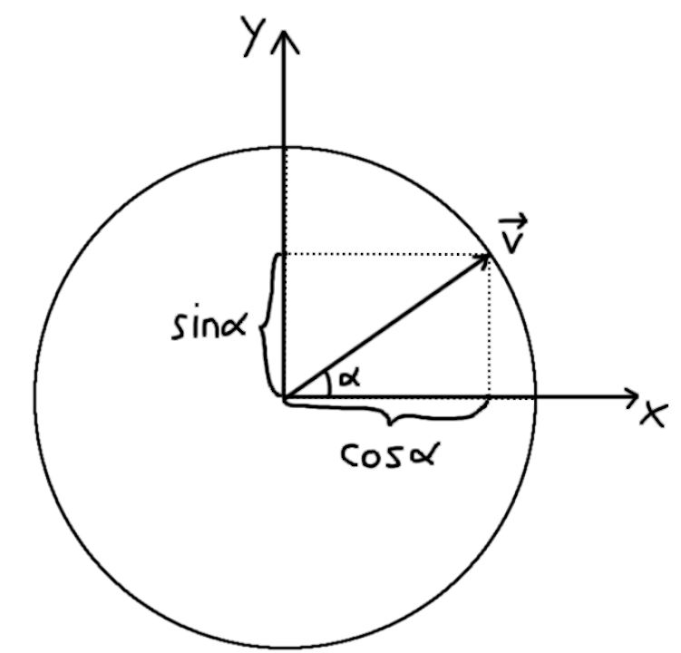
Dựa vào hình này bạn cũng tự suy ra được tại sao \(\cos{0}=1\) hay \(\sin{\alpha}^2 + \cos{\alpha}^2 = 1\) (pytago) hay bất cứ thứ gì khác.4. Tích vô hướng
Một khái niệm khác mà mình không được dạy về bản chất là tích vô hướng, mình cũng chỉ được dạy về công thức của nó và các bài tập liên quan (mình quên bài tập gì rồi). Nếu bạn không nhớ, công thức tích vô hướng đối với 2 vector \(\vec{a} = (a_x, a_y)\) và \(\vec{b} = (b_x, b_y)\) là: $$ \vec{a} \cdot \vec{b} = a_x b_x + a_y b_y $$ Ngoài ra nó cũng có một công thức khác nữa, đó là: $$ \vec{a} \cdot \vec{b} = |\vec{a}| |\vec{b}| \cos{\theta} $$ Nhìn thấy \(cos\), bạn cũng đoán được tiếp theo mình sẽ nói gì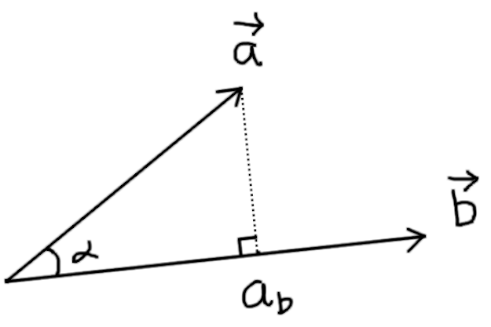
Hmmmm, cũng không có ý nghĩa gì mấy, thật ra nó sẽ có công dụng khi một trong 2 vector là vector đơn vị (độ dài = 1), ví dụ \(|\vec{b}|=1\), thì lúc đó tích vô hướng \(\vec{a} \cdot \vec{b}\) là độ dài hình chiếu của \(\vec{a}\) lên \(\vec{b}\), và trường hợp ngược lại cũng đúng. Bạn sẽ từ từ thấy sự hữu dụng của tính chất này vì như trên mình nói, ta sẽ xài tới hình chiếu hơi nhiều trong engine ta làm 😳
Ngoài ra, tích vô hướng cũng có 1 công dụng hữu ích khác. Vì có \(cos\) trong công thức, nên tích vô hướng sẽ \(= 0\) khi 2 vector vuông góc nhau, \(> 0\) khi 2 vector "hướng về cùng 1 vùng" và \(< 0\) khi "hướng về vùng ngược nhau".
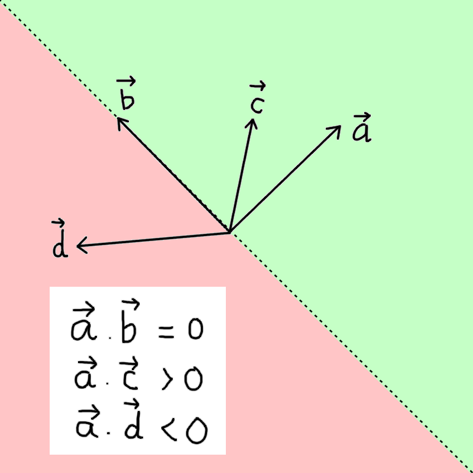
Những vector nào hướng về vùng xanh là hướng về "cùng 1 vùng" với \(\vec{a}\), vector nào hướng về vùng đỏ là hướng "ngược vùng" với \(\vec{a}\)5. Tích có hướng
Ngược lại với 2 cái trên, cái này thì mình được dạy về bản chất, vì cơ bản là mình phải hiểu định nghĩa của nó mới hiểu được kết quả của nó 😅 Nếu bạn không nhớ, tích có hướng giữa \(\vec{a}\) và \(\vec{b}\) là một vector \(\vec{c}\) vuông góc với cả 2 vector trên, và có công thức như sau: $$ \vec{a} \times \vec{b} = \begin{pmatrix} a_x\\ a_y\\ a_z \end{pmatrix} \times \begin{pmatrix} b_x\\ b_y\\ b_z \end{pmatrix} = \begin{pmatrix} a_y b_z - a_z b_y \\ a_z b_x - a_x b_z \\ a_x b_y - a_y b_x \end{pmatrix} $$ Thứ duy nhất mình muốn lưu ý là tùy vào hệ tọa độ tay trái hay phải mà hướng của tích có hướng sẽ thay đổi, engine của mình hệ tay trái nên nó sẽ ngược lại nếu bạn tính theo cách thuần toán học, nhưng sẽ không ảnh hưởng gì lớn, miễn sao là nó nhất quán suốt engine.6. Tam giác
Chắc cái này bạn đã từng nghe qua, tất cả mọi thứ trong đồ họa 3D đều được làm từ nhiều hình tam giác ghép lại với nhau, và nó đúng là như vậy, đơn giản chỉ là vì tam giác là hình dạng cơ bản nhất mà bạn có thể tạo được từ các điểm và đường. Sau đây mình sẽ demo với một hình lập phương đơn giản, hình lập phương được tạo thành từ 6 mặt phẳng, mỗi mặt phẳng đó sẽ được tạo thành từ 2 tam giác, mình sẽ gọi 6 mặt phẳng đó là TOP, DOWN, FRONT, BACK, LEFT và RIGHT. Trước tiên đối với 4 đỉnh của mặt phẳng DOWN, FRONT và LEFT: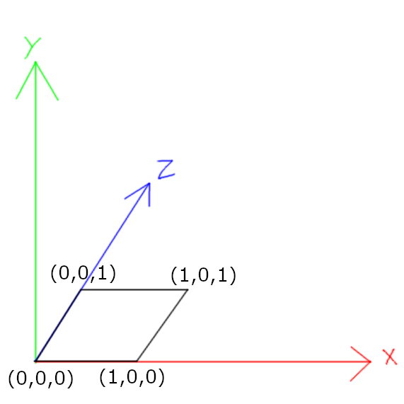
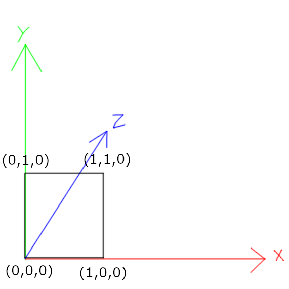
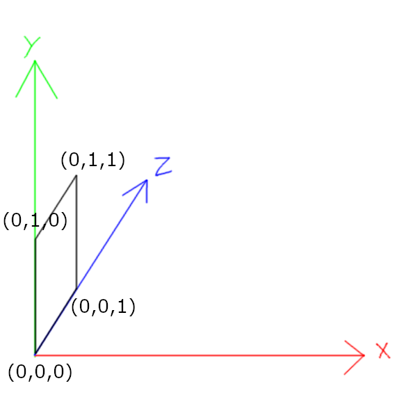
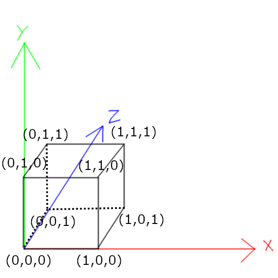
Sau đó ta bắt đầu cắt 6 mặt phẳng của hình lập phương thành các tam giác, mỗi mặt phẳng sẽ có 2 tam giác: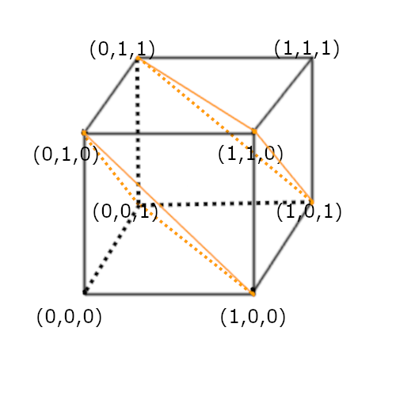
Đối với mặt FRONT, ta có 2 tam giác là [(0,1,0), (1,1,0), (1,0,0)] và [(0,1,0), (1,0,0), (0,0,0)], lưu ý là thứ tự các đỉnh liệt kê trong tam giác phải thống nhất cùng chiều kim đồng hồ hay ngược chiều kim đồng hồ, điều này khá quan trọng, ta sẽ nói về điều này sau.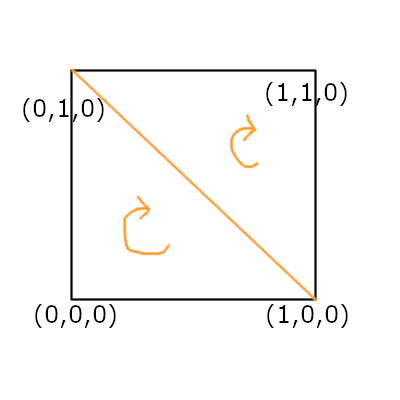
Tương tự, đối với cả hình lập phương, ta sẽ có tất cả 12 tam giác như sau (mình thống nhất theo cùng chiều kim đồng hồ):[// FRONT
{{0,1,0}, {1,1,0}, {1,0,0}},
{{0,1,0}, {1,0,0}, {0,0,0}},
// RIGHT
{{1,1,0}, {1,1,1}, {1,0,1}},
{{1,1,0}, {1,0,1}, {1,0,0}},
// BACK
{{1,1,1}, {0,1,1}, {0,0,1}},
{{1,1,1}, {0,0,1}, {1,0,1}},
// LEFT
{{0,1,1}, {0,1,0}, {0,0,0}},
{{0,1,1}, {0,0,0}, {0,0,1}},
// TOP
{{0,1,1}, {1,1,1}, {1,1,0}},
{{0,1,1}, {1,1,0}, {0,1,0}},
// BOTTOM
{{1,0,1}, {0,0,1}, {0,0,0}},
{{1,0,1}, {0,0,0}, {1,0,0}}]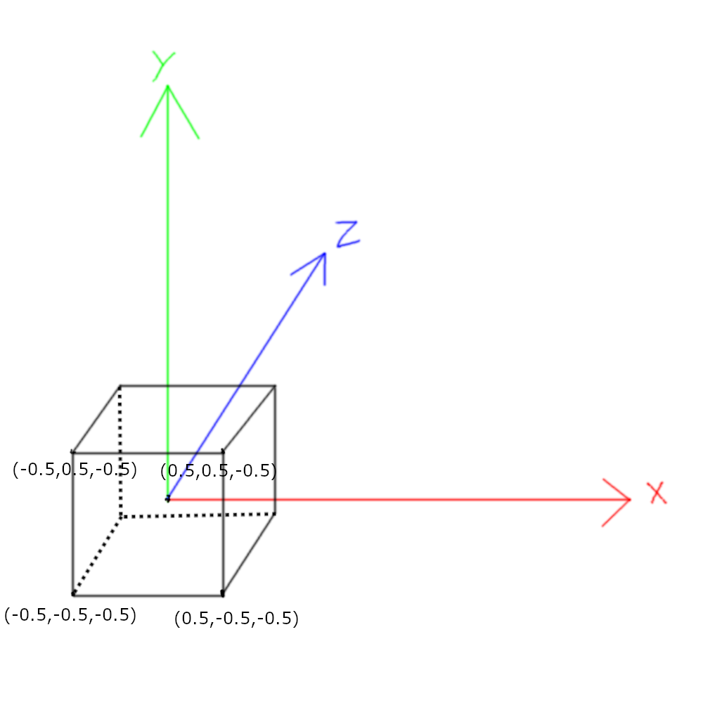
Và 12 tam giác cuối cùng sẽ là:[// FRONT
{{-0.5,0.5,-0.5}, {0.5,0.5,-0.5}, {0.5,-0.5,-0.5}},
{{-0.5,0.5,-0.5}, {0.5,-0.5,-0.5}, {-0.5,-0.5,-0.5}},
// RIGHT
{{0.5,0.5,-0.5}, {0.5,0.5,0.5}, {0.5,-0.5,0.5}},
{{0.5,0.5,-0.5}, {0.5,-0.5,0.5}, {0.5,-0.5,-0.5}},
// BACK
{{0.5,0.5,0.5}, {-0.5,0.5,0.5}, {-0.5,-0.5,0.5}},
{{0.5,0.5,0.5}, {-0.5,-0.5,0.5}, {0.5,-0.5,0.5}},
// LEFT
{{-0.5,0.5,0.5}, {-0.5,0.5,-0.5}, {-0.5,-0.5,-0.5}},
{{-0.5,0.5,0.5}, {-0.5,-0.5,-0.5}, {-0.5,-0.5,0.5}},
// TOP
{{-0.5,0.5,0.5}, {0.5,0.5,0.5}, {0.5,0.5,-0.5}},
{{-0.5,0.5,0.5}, {0.5,0.5,-0.5}, {-0.5,0.5,-0.5}},
// BOTTOM
{{0.5,-0.5,0.5}, {-0.5,-0.5,0.5}, {-0.5,-0.5,-0.5}},
{{0.5,-0.5,0.5}, {-0.5,-0.5,-0.5}, {0.5,-0.5,-0.5}}]2. Setup cơ bản
Các kiến thức cơ bản đã qua, bây giờ ta cần phải setup trước canvas của chúng ta để vẽ được thứ gì đó trước: Đây là tất cả những gì ta cần làm ở HTML, phần còn lại sẽ nằm ở Javascript, sẽ nằm bên trong tag script. Series này mình sẽ làm mọi thứ chạy được trong 1 file HTML duy nhất, một là để bạn tiện copy và chạy luôn (chỉ cần double click vào file HTML), hai là để tăng độ "thuần khiết" và magic, rằng ta chỉ cần gõ gõ trong một file HTML là có thể vẽ được đồ họa 3D (no joke).Trước tiên ta sẽ vẽ một hình tròn đơn giản lên canvas, bằng những hàm có sẵn của canvas 2D context.
Đầu tiên ta sẽ lấy reference tới canvas:
const canvas = document.getElementById("gameCanvas");const ctx = canvas.getContext("2d");ctx.arc(canvas.width / 2, canvas.height / 2, 12, 0, 2 * Math.PI, true);
ctx.stroke();